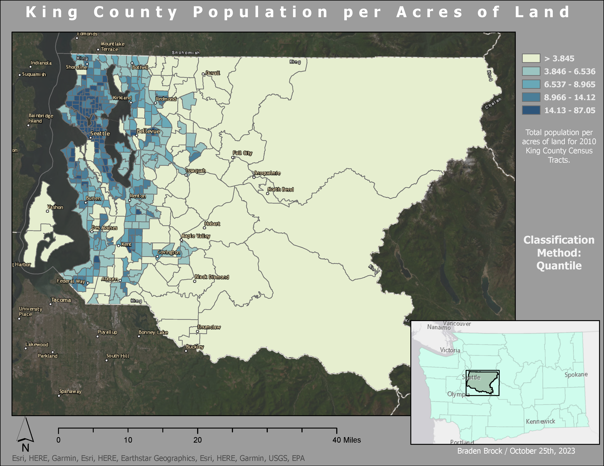
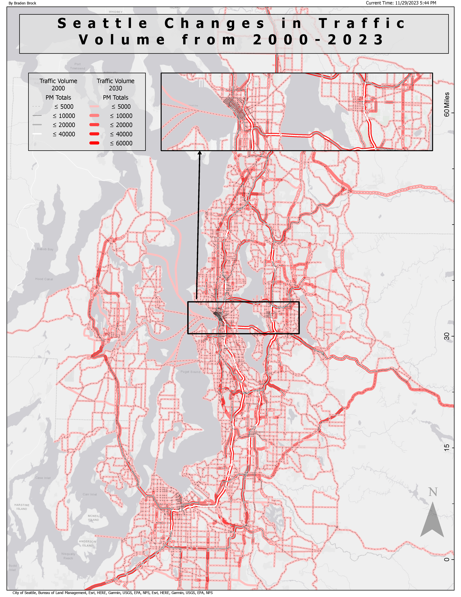
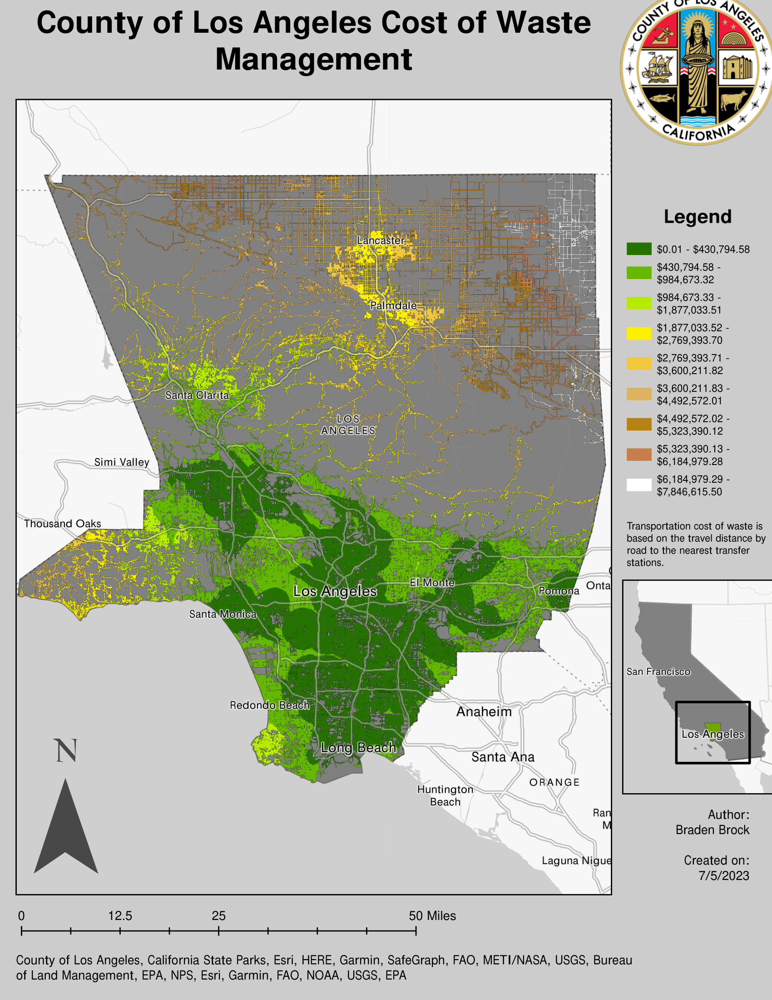
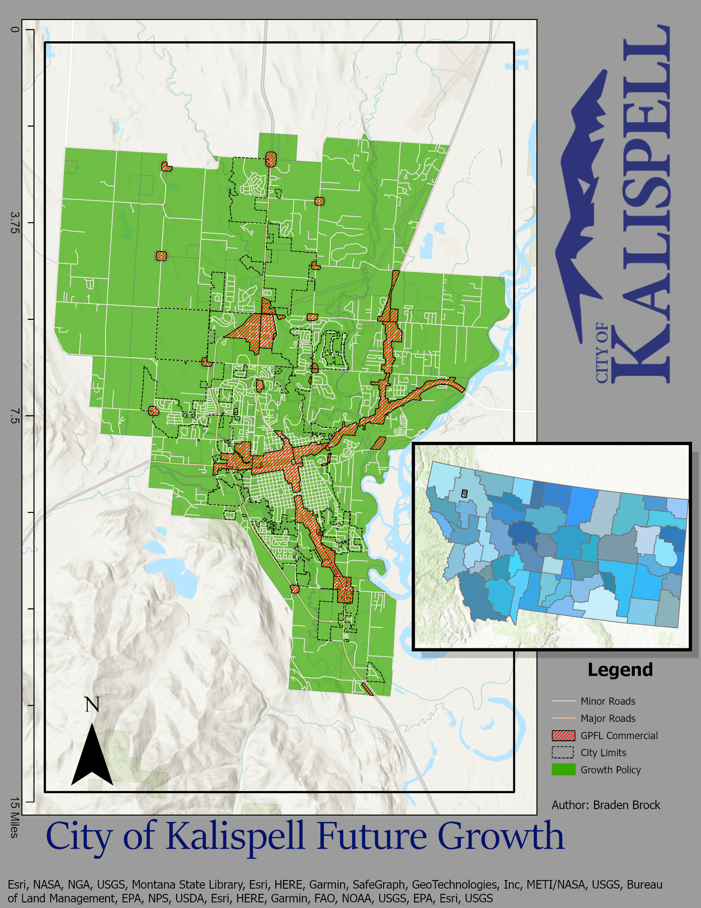
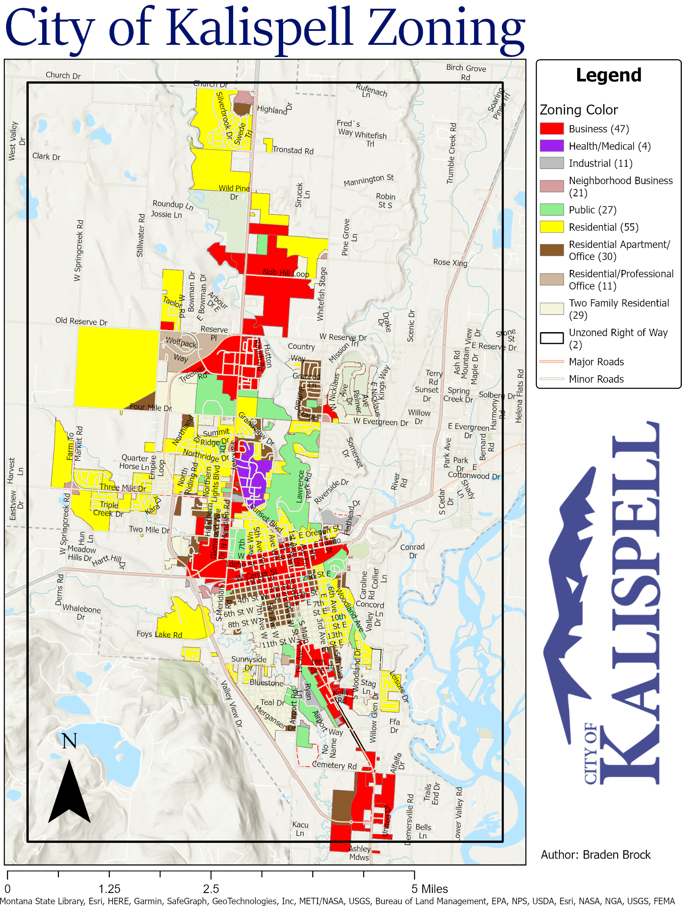
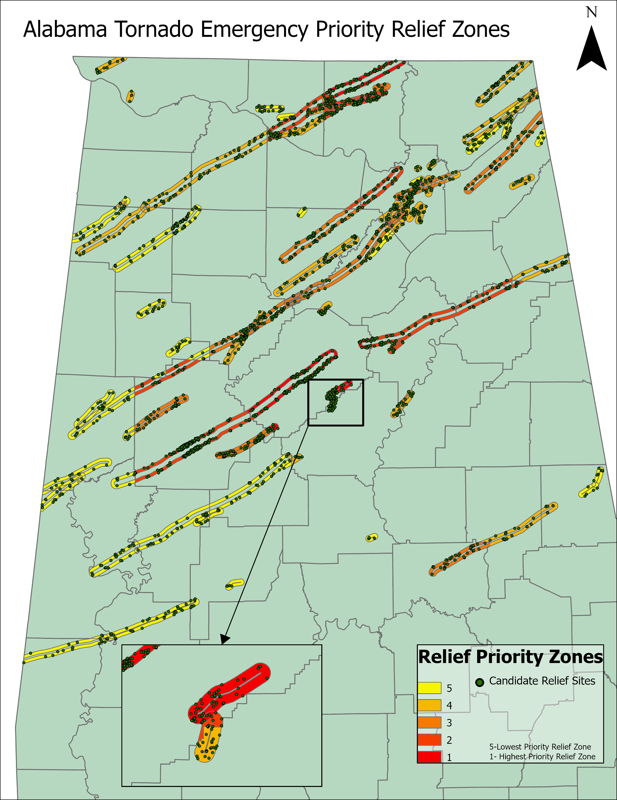
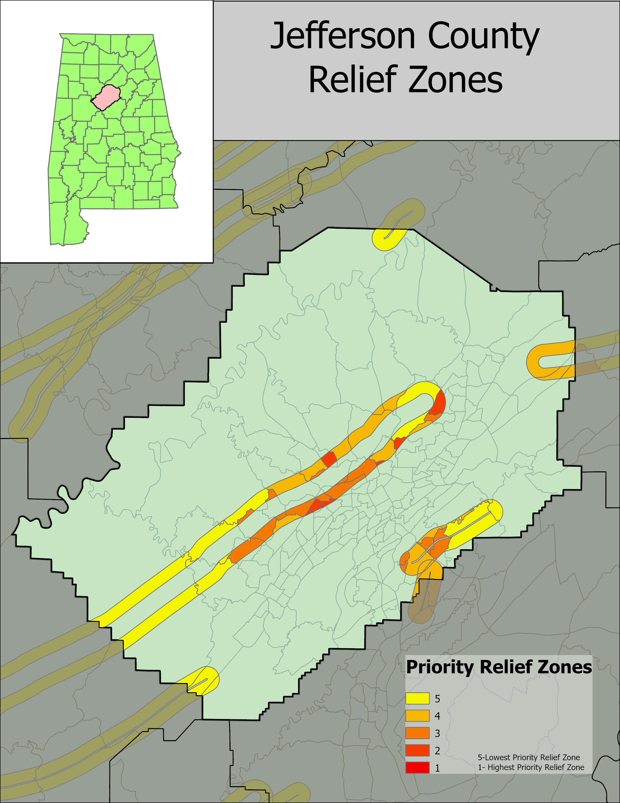

Academic Work
King County Chloropleth Map

Lesson: Dilineation of County; Cartographic Techniques;
Program Used: ArcGIS Pro
Seattle Traffic Flow Map

Lesson: Cargoraphic Techniques; Data Layering
Program Used: ArcGIS Pro
County of Los Angeles

Lesson: Cost Based Analysis; Cost Distance Analysis; Cartographic Techniques
Program Used: ArcGIS Pro
City of Kalispell Future Growth Planning

Lesson: Catographic Techniques
City of Kalispell Zoning

Lesson: Open Data Portals
Alabama Emergency Priority Zones

Lesson: Buffer Zones and Attribute Table Manipulation
Jerfforson Country Emergency Relief Zones

Lesson: Buffer and Overlay Operations